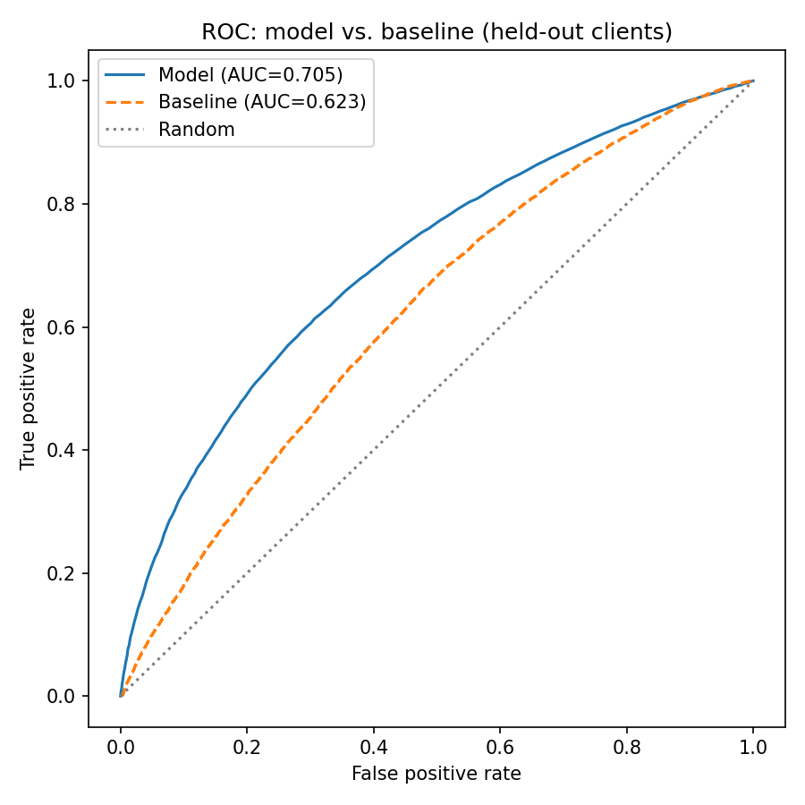
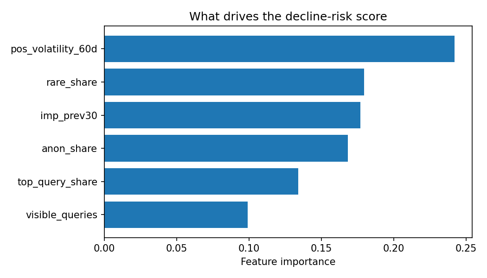

Abstract
Content editors managing thousands of pages need a way to know which ones to review first as search performance shifts. Using page-level features from FlyRank's 79-million-row search warehouse — prior-period impressions, query concentration, and 60-day position volatility — this project trains a random forest to flag pages likely to decline, validated on clients it never saw during training. The model reaches 0.705 ROC-AUC versus 0.623 for the strongest single-signal baseline, an improvement that held up under a client-grouped split rather than a random one. Raw accuracy (0.646) is actually below the task's 67.7% base rate — a deliberate finding, not a flaw, since accuracy is misleading under this class imbalance and AUC is the honest metric here. The output is a ranked, reason-coded action list an editor can use to prioritize review today.
1
The problem
Which pages should a content editor prioritize for review when search impressions start dropping? The unit of analysis is one content item — a single page, within one client — and the output is a ranked list of pages by estimated decline risk, each carrying a plain-language reason code.
An editor or SEO specialist acts on this by reviewing the highest-risk pages first, rather than working through pages in an arbitrary order. Getting it wrong has a real cost either way: a false positive wastes editorial time on a page that didn't need it, while a false negative lets a genuinely declining page keep losing traffic unreviewed.
No single feature was strong enough on its own to make this call well — the strongest raw signal alone reaches only 0.623 AUC. Combining prior impressions, query-mix signals, and position volatility produced a meaningfully better ranking, which is the case for using a model here rather than a fixed rule.
2
Data
This project draws on two tables from the FlyRank internship warehouse release, hosted as pseudonymized Parquet on Hugging Face: fact_content_daily_performance (daily impressions, clicks, and average position, most recent 60 days) and fact_content_query_90d (query-level concentration signals per page).
What was deliberately excluded
No pre-computed trend or direction fields were used as features — the decline label was built from scratch off raw impression counts, so it doesn't inherit anyone else's label logic or leakage risk. client_hash_id and content_hash_id are pseudonymous identifiers used only for joining tables and for the grouped train/test split; they are never passed to the model as features.
Leakage check
Features are computed from the prior 30-day window; the label is computed from the following 30-day window. No feature is derived from the same days used to define the label. No client names, raw URLs, or query text appear anywhere in the working files — only hashed IDs and aggregated numeric features.
3
Methodology
The baseline is pos_volatility_60d — the standard deviation of average search position over 60 days — used directly as a ranking score with no model attached. It was chosen because a feature-importance pass showed it was the single strongest raw signal available, which makes it a fair "what if we did nothing fancy" comparison.
The model is a random forest classifier (200 trees) over six features: imp_prev30, visible_queries, rare_share, anon_share, top_query_share, and pos_volatility_60d. Any client- or content-identifying field was left out on purpose, along with anything derived from the same window as the label.
The target is a proxy, stated plainly: is_declining = 1 if a page's impressions fell more than 20% from the prior 30-day window to the last 30-day window, else 0 — a proxy for "needs review," not a claim about cause.
Validation uses a GroupShuffleSplit by client (75/25), not a random row split. This tests whether the model generalizes to clients it has never seen at all, which is the condition a real production tool would actually face.
4
Results
| Metric | Baseline (volatility alone) | Model (6 features) |
|---|---|---|
| ROC-AUC | 0.623 | 0.705 |
| Accuracy | — | 0.646 |
| Base rate (majority class) | 0.677 | 0.677 |
Why accuracy is the wrong headline here. Roughly 68% of held-out pages are already labeled "declining," so a model that always guessed "declining" would score 67.7% accuracy while learning nothing at all. This model's accuracy (0.646) sits below that — because it trades some accuracy for genuine class separation. Recall on the harder, minority class reached 0.668, up from 0.336 in an earlier version without the volatility feature. AUC is what reflects that correctly; accuracy hides it.


5
What the model actually found
Position volatility over the past 60 days (importance 0.242) is the strongest signal — ahead of rare-query share (0.180), prior impressions (0.177), anonymized-query share (0.168), top-query concentration (0.134), and visible query count (0.099). Pages with unstable rankings are a clearer early indicator of decline than raw impression volume.
Among the highest-risk pages in the held-out ranking, "unstable ranking position" and "over-reliant on one query" co-occur more often than any other pairing — suggesting these two signals together carry more warning than either alone.
A negative result worth keeping, not burying. A random, non-grouped split initially made the model look only marginally better than the base rate. Switching to a client-grouped split revealed that the model actually performs below the base rate on raw accuracy — an important, well-understood negative finding about what a naive evaluation would have hidden.
6
Limitations & honest framing
This model is decision support, not proof. It observes an association between prior signals — impressions, query concentration, position volatility — and subsequent impression decline. It does not identify why any individual page declined, and it makes no claim about Google's ranking algorithm.
The label itself is a proxy, not ground truth: "declining" means a greater than 20% impression drop month-over-month, a reasonable but arbitrary operational threshold. A different threshold would shift which pages get flagged.
Generalization is measured across clients already present in the warehouse, not guaranteed for a brand-new client with no history, a different vertical, or different seasonality.
No causal claims follow from this work. The model finds pages associated with decline; it does not test why, and correlation between volatility and decline is not evidence that stabilizing a page's position would reverse it — that would require an actual experiment, such as an A/B content-refresh test, which this project does not run. Treat every score here as directional: a ranking to prioritize review, not a precise probability that any one page will decline.
7
Ranked recommendations
All 51,701 held-out pages are scored 0–1 by decline risk and ranked highest-first, each with a plain-language reason code attached. The top decile — score ≥ 0.835, roughly 5,170 pages — is the recommended first-review queue, sized to whatever review capacity a team actually has rather than a fixed count.
In practice, an editor pulls the top decile from the ranked list and reads the reason code before opening the page:
Confidence should be stated plainly alongside the list: this is directional prioritization — meaningfully better than chance, not a guarantee any individual page will decline.
8
Reproducibility
To re-run this from a fresh clone: open the warehouse-connection notebook in Colab, add a Colab Secret named HF_TOKEN with a Hugging Face read token that has accepted access to the internship warehouse dataset, and run all cells — the feature-build step takes roughly 2–6 minutes. This produces capstone_features.csv, which the capstone notebook loads directly. Running the capstone notebook end to end reproduces the model, both AUC numbers, the ranked action list, and both charts on this page.
A single random seed (random_state=42) is used throughout, for both the train/test split and the model. The held-out test set is built once and every reported metric is scored against that same set — never re-split or re-sampled afterward — so the "evaluated once, blind" claim above is checkable from the repository, not asserted on faith.
- capstone.ipynbfull analysis notebook, runs top to bottom
- capstone_report.mdfull written report
The engineered feature table and full ranked action list are not committed to the repository — they're derived exports of the gated warehouse data, and re-running the notebook above regenerates them exactly, seeded and reproducible, without publishing a raw data export.